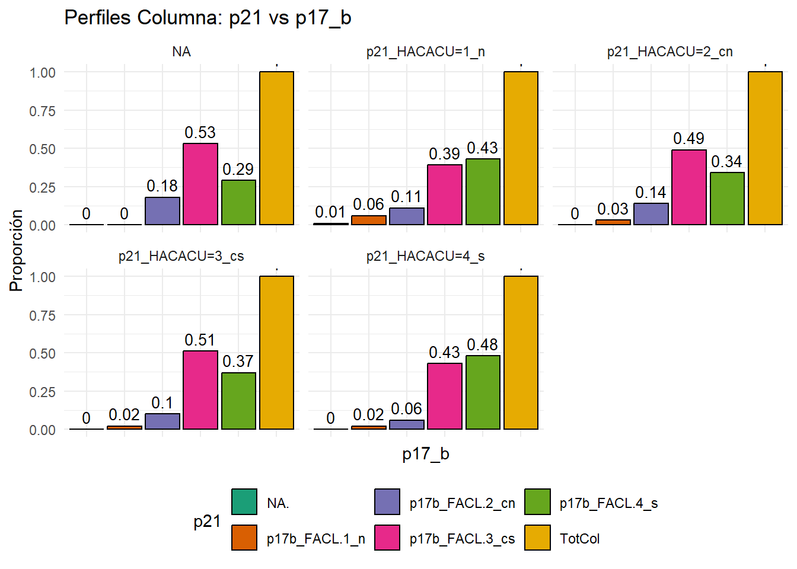
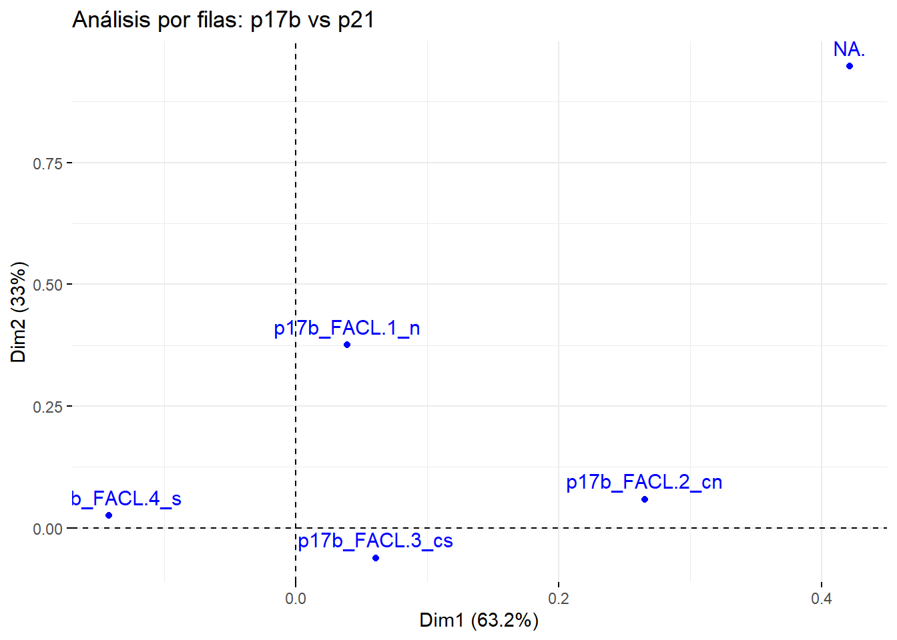
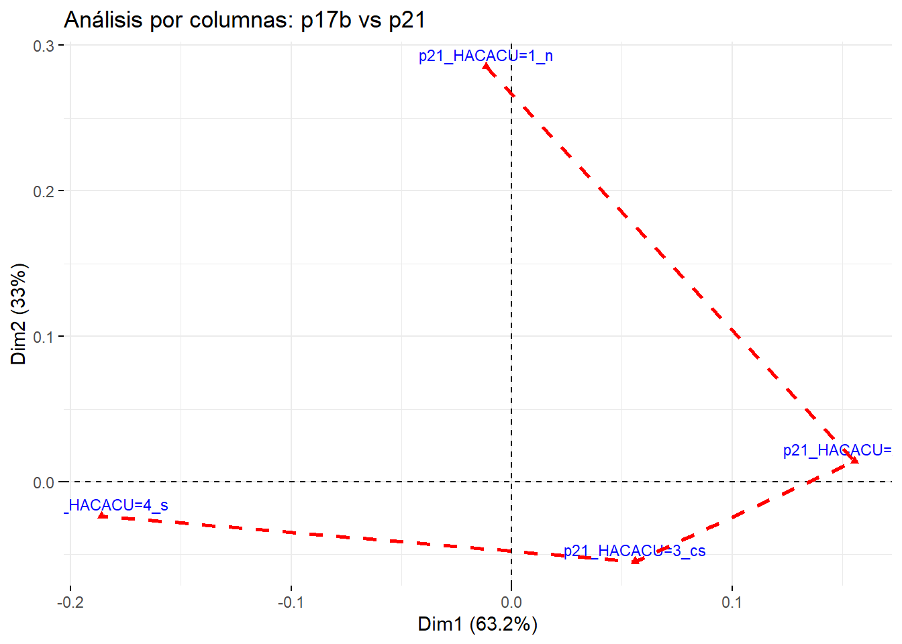
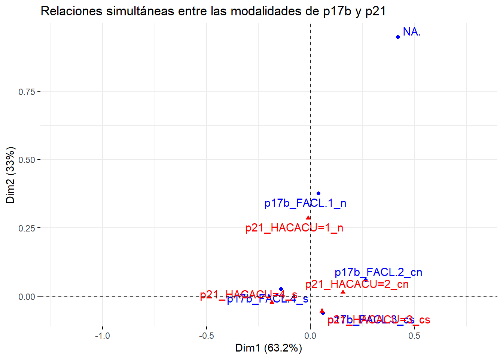
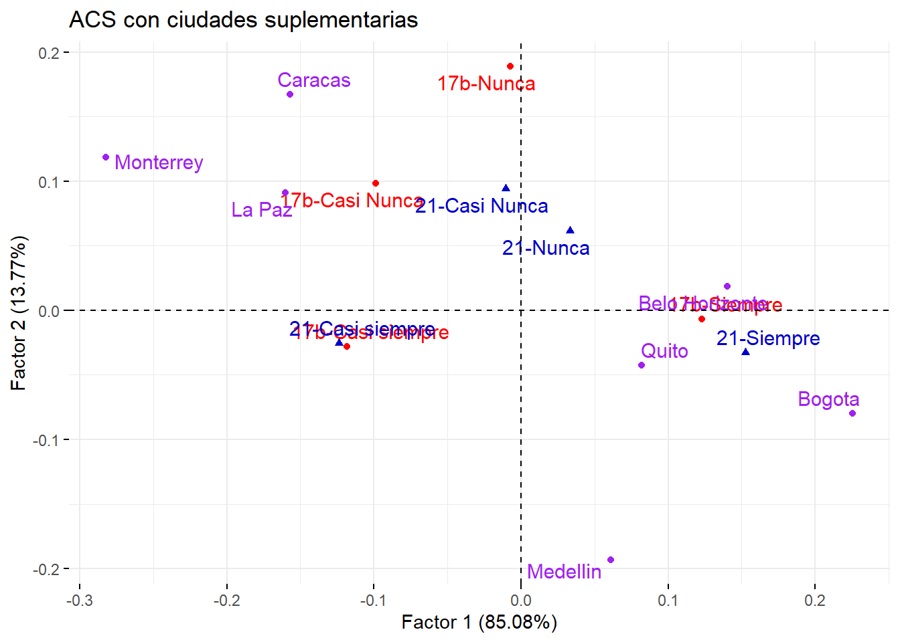
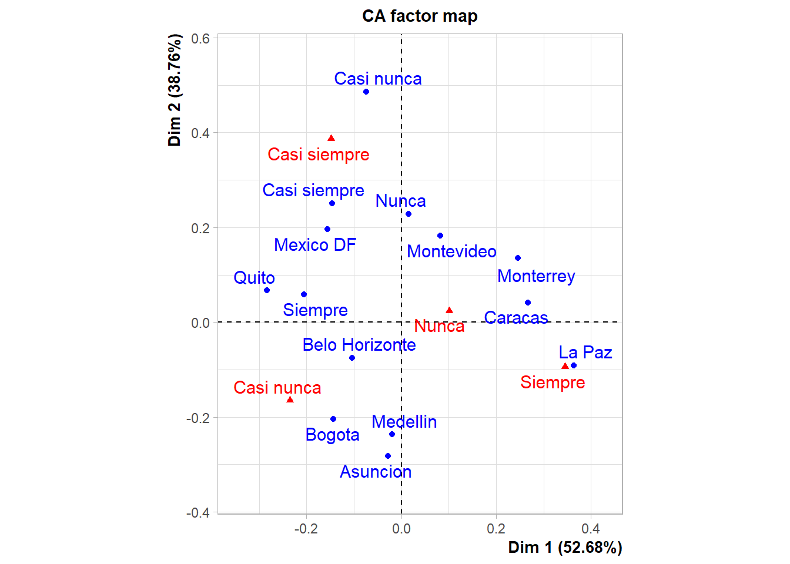
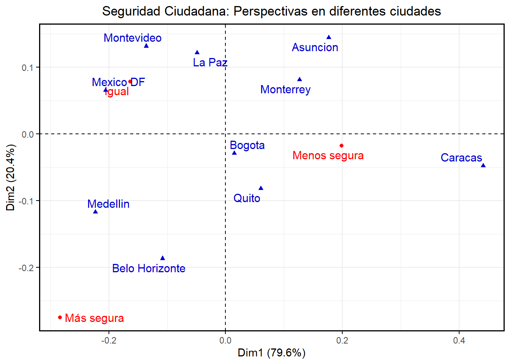
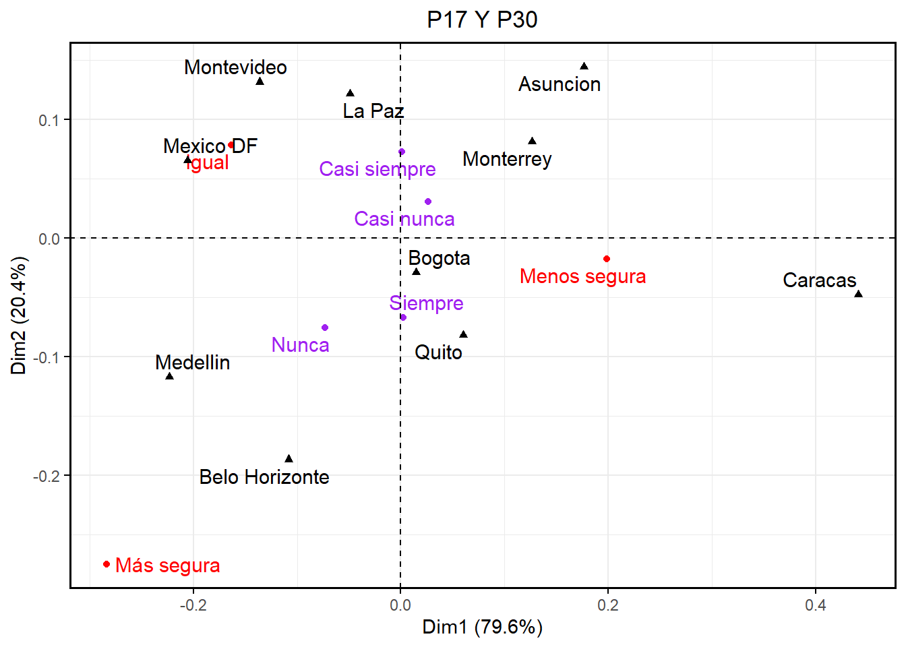

| p21_HACACU=1_n | p21_HACACU=2_cn | p21_HACACU=3_cs | p21_HACACU=4_s | NA | Sum | |
|---|---|---|---|---|---|---|
| p17b_FACL=1_n | 13 | 16 | 21 | 17 | 0 | 67 |
| p17b_FACL=2_cn | 25 | 73 | 96 | 47 | 3 | 244 |
| p17b_FACL=3_cs | 89 | 261 | 494 | 324 | 9 | 1177 |
| p17b_FACL=4_s | 100 | 182 | 356 | 361 | 5 | 1004 |
| NA | 3 | 2 | 3 | 0 | 0 | 8 |
| Sum | 230 | 534 | 970 | 749 | 17 | 2500 |
Taller Cuatro
Análisis de correspondencias simples (ACS)
Punto 1 y 3
Con la metodología del ejemplo 1.8.1 hacer un ACS para la tabla de contingencias p17b×p21 con las preguntas“p17 b”(en las filas) sobre la facilidad para cumplir la ley y la preferencia por hacer acuerdos p21. Identificar patrones o tendencias si los hay y comentar los resultados.
Se análizara las siguientes preguntas en el ACS.
P17_b facilidad para cumplir la ley
Le queda fácil actuar conforme a la ley
| 1. nunca | 2. casi nunca | 3. casi siempre | 4. Siempre | NA |
|---|
P21 preferencia por hacer acuerdos
Las personas normalmente hacen acuerdos o tratos entre si. Muchas veces son acuerdos informales (Por ejemplo, los acuerdos basados en la palabra, sin contrato firmado). Otras veces son acuerdos formales.
| 1. nunca | 2. casi nunca | 3. casi siempre | 4. Siempre | NA |
|---|
Ante estas dos preguntas podríamos esperar que las personas que tienen facilidad por cumplir la ley también tienen preferencia por hacer acuerdos, mientras que a los que se les dificulta hacer cumplimiento de la ley deberían así mismo tener dificultad para hacer acuerdos, por medio del siguiente ACS se corroborará está conjetura.
La siguiente tabla de contingencia, contiene las frecuencias de respuesta a estas dos preguntas. En ella se observa que las frecuencias más altas están en las respuestas p17b=3_cs y p21_HACACU=3_cs (494), junto con p17b=4_s y p21_HACACU=4_s (361). Estas cifras absolutas parecen corroborar la hipótesis anunciada arriba. Sin embargo, la conjetura no se sostiene entre los 244 que dicen tener dificultad para cumplir la ley p17b=2_cn pues 143 de ellos dicen que siempre o casi siempre tienen preferencia por hacer acuerdos. Tampoco se sostiene la hipótesis en que de las 230 personas que afirmaron que nunca prefieren hacer acuerdos, 189 de ellos tienen facilidad para cumplir la ley.
En el siguiente ejemplo se ilustra cómo los perfiles permiten develar tendencias y patrones que no se veían claramente en las tablas de frecuencias.
| p21_HACACU=1_n | p21_HACACU=2_cn | p21_HACACU=3_cs | p21_HACACU=4_s | NA | TotFil | |
|---|---|---|---|---|---|---|
| p17b_FACL.1_n | 0.19 | 0.24 | 0.31 | 0.25 | 0.00 | 1 |
| p17b_FACL.2_cn | 0.10 | 0.30 | 0.39 | 0.19 | 0.01 | 1 |
| p17b_FACL.3_cs | 0.08 | 0.22 | 0.42 | 0.28 | 0.01 | 1 |
| p17b_FACL.4_s | 0.10 | 0.18 | 0.35 | 0.36 | 0.00 | 1 |
| NA. | 0.38 | 0.25 | 0.38 | 0.00 | 0.00 | 1 |
En la siguiente tabla se muestran los perfiles fila (o frecuencias condicionales), el resultado más llamativo que se observa es que de los que casi nunca tienen facilidad para cumplir la ley el 58% casi siempre o siempre prefiere hacer acuerdos, así mismo ocurre con las personas que indican que nunca tienen facilidad para cumplir la ley pues el 56% afirma que si tiene facilidad para hacer acuerdos , estos dos resultados son consistentes entre ellos, sin embargo no son consecuentes con la conjeturas inicial, Lo que da indicios de que si bien hay cierta tendencia a que quienes tienen preferencia por hacer acuerdos entre quienes tienen facilidad para cumplir la ley, también entre quienes presentan dificultades para cumplirá

En la siguiente tabla se muestran los perfiles columna. Lo más curioso es que cualquiera sea el grado de preferencia por hacer acuerdos, en todos los casos domina el grado de casi siempre y siempre de facilidad para actuar conforme a la ley. En conformidad con esto también podemos verlo de otra forma por medio del grafico de barras
| p21_HACACU=1_n | p21_HACACU=2_cn | p21_HACACU=3_cs | p21_HACACU=4_s | NA | |
|---|---|---|---|---|---|
| p17b_FACL.1_n | 0.06 | 0.03 | 0.02 | 0.02 | 0.00 |
| p17b_FACL.2_cn | 0.11 | 0.14 | 0.10 | 0.06 | 0.18 |
| p17b_FACL.3_cs | 0.39 | 0.49 | 0.51 | 0.43 | 0.53 |
| p17b_FACL.4_s | 0.43 | 0.34 | 0.37 | 0.48 | 0.29 |
| NA. | 0.01 | 0.00 | 0.00 | 0.00 | 0.00 |
| TotCol | 1.00 | 1.00 | 1.00 | 1.00 | 1.00 |
Para corroborar la conjetura acerca de la relación entre las modalidades de respuesta de las preguntas p17_b sobre la facilidad para cumplir la ley, y p21 acerca de la preferencia para hacer acuerdos, se lleva a cabo un ACS.

ACS
Los indicadores (coordenadas, contribuciones y cos2) para la interpretación se muestran en la siguiente tabla. El Factor 1, queda mejor tipificado por la modalidad p17b=4_s, la cual es la que más contribuye a la varianza del factor (46.65 %) y también es las mejor representada (Cos2=0.96), aunque tiene la menor coordenada (-0.14). La segunda mayor contribución a este factor es la de la opción p17b=3_cs (39.78 %) y también está bien representada por este (Cos2=0.90), Para el factor 2 la opción que más contribuye es p17b=1_n (41.84%) y está muy bien representada por este pues su Cos2 es de 0.98 y la segunda contribución más alta para este factor es NA (31.86%) y bien representada con un cos2 de 0.76.
| Dim 1 | Dim 2 | Cont_Factor1 | Cont_Factor2 | Cos2_Factor1 | Cos2_Factor2 | |
|---|---|---|---|---|---|---|
| p17b_FACL.1_n | 0.04 | 0.38 | 0.24 | 41.84 | 0.01 | 0.98 |
| p17b_FACL.2_cn | 0.27 | 0.06 | 39.78 | 3.74 | 0.90 | 0.04 |
| p17b_FACL.3_cs | 0.06 | -0.06 | 10.05 | 19.73 | 0.47 | 0.48 |
| p17b_FACL.4_s | -0.14 | 0.03 | 46.65 | 2.83 | 0.96 | 0.03 |
| NA. | 0.42 | 0.95 | 3.28 | 31.86 | 0.15 | 0.76 |
De lo anterior se puede deducir que en el plano factorial se puede observar que el cuadrante I está tipificado por los que No saben con certeza su facilidad para cumplir la ley y por lo que nunca tienen facilidad de cumplirla, mientras que en el centro del plano es para los que tienen cierta facilidad y mucha facilidad para cumplir las leyes. Además, el hecho de que la opción de respuesta p17b=4_s tenga coordenadas negativas sobre el Factor 1, refleja la aparente paradoja de que hay encuestados que habiendo contestado que siempre tienen facilidad para hacer acuerdos, también contesten que les queda casi siempre les queda difícil actuar conforme a la ley.

Los indicadores (coordenadas, contribuciones y cos2) para la interpretación se muestran en la siguiente tabla. Se evidencia que el Factor 1 queda mejor tipificado por la modalidad p21_HACACU=4_s, pues su contribución para este factor es del 59.94% y es el mejor representado con un cos2 de 0.98 aunque tiene la menor coordenada (-0.19), las segunda mayor contribución para el Factor 1 la da p21_HACACU=2_cn y también está muy bien representada con un cos2 de 0.93, por otro lado el Factor 2 queda mejor tipificado por p21_HACACU=1_n con una contribución de 83.02% y bien representado con un cos2 de 0.98
| Coord_Factor1 | Coord_Factor2 | Contr_Factor1 | Contr_Factor2 | Cos2_Factor1 | Cos2_Factor2 | |
|---|---|---|---|---|---|---|
| p21_HACACU=1_n | -0.01 | 0.29 | 0.07 | 83.02 | 0.00 | 0.99 |
| p21_HACACU=2_cn | 0.16 | 0.01 | 29.81 | 0.49 | 0.93 | 0.01 |
| p21_HACACU=3_cs | 0.06 | -0.05 | 7.01 | 12.82 | 0.44 | 0.42 |
| p21_HACACU=4_s | -0.19 | -0.02 | 59.94 | 1.85 | 0.98 | 0.02 |
| NA | 0.28 | -0.16 | 3.17 | 1.82 | 0.62 | 0.19 |
En el plano factorial se puede observar que la dimensión 1 separa principalmente a los niveles altos y medios de preferencia por hacer acuerdos, y por el lado del factor 2 está dado por la nula preferencia por hacer acuerdos, además se resalta la ausencia de NA, y ocurre porque no aporta información en ninguno de los dos factores

Relaciones entre filas y columnas
Los análisis separados de filas y columnas se pueden sintetizar en una representación simultanea de filas y columnas como la de la siguiente gráfica. La cercanía entre las opciones indica que entre ellas hay un alto grado de asociación, en el sentido de que quienes contestaron la una también tienden a contestar la otra

Punto 2
Construir la tabla de contingencias p17_b×ciudad excluyendo la ciudad que le correspondió al grupo y las ciudades de Asunción y Montevideo. Yuxtaponerla a la tabla p17_b × p21 del ejercicio 1 y utilizarla como variable suplementaria para averiguar si se puede identificar algún patrón o tendencia en la facilidad para cumplir la ley en las ciudades suplementarias con respecto a las tendencias de la ciudad que le correspondió al grupo.
library(readxl)
library(FactoMineR)
library(kableExtra)
library(sqldf)
library(ggplot2)
library(factoextra)
Encuestas <- read.csv2("C:/Users/fabia/OneDrive - Universidad Nacional de Colombia/UNAL/Descriptiva multivariada/Talleres/Recopilación/Bases de datos/ECC_completa_19426.csv", comment.char="#")
Encuestas <- as.data.frame(Encuestas)
Encuestas <- sqldf("select ciudad2, p17_b, p21
from Encuestas
where ciudad2 in ('Quito', 'Belo Horizonte', 'Caracas', 'La Paz', 'Bogota', 'Medellin', 'Monterrey')")
TablaPreguntas <- table(Encuestas$p17_b, Encuestas$p21)
TablaCiudades <- table(Encuestas$ciudad2, Encuestas$p21)
TablaContingencia <- rbind(TablaPreguntas, TablaCiudades)
rownames(TablaContingencia) <- c("17b-Nunca", "17b-Casi Nunca", "17b-Casi siempre", "17b-Siempre", "Belo Horizonte", "Bogota", "Caracas", "La Paz", "Medellin", "Monterrey", "Quito")
colnames(TablaContingencia) <- c("21-Nunca", "21-Casi Nunca", "21-Casi siempre", "21-Siempre")
TablaContingencia 21-Nunca 21-Casi Nunca 21-Casi siempre 21-Siempre
17b-Nunca 74 67 149 107
17b-Casi Nunca 265 181 610 343
17b-Casi siempre 910 651 2838 1603
17b-Siempre 1169 759 2507 2483
Belo Horizonte 202 188 481 507
Bogota 502 344 1141 1431
Caracas 465 274 937 424
La Paz 519 161 957 421
Medellin 311 128 956 820
Monterrey 363 300 1067 355
Quito 87 287 618 602Tabla de varianza y valores propios
ACSCiudades <- CA(TablaContingencia, graph = F, row.sup = c(5:11))
kable(round(ACSCiudades$eig,4), format = "html", booktabs = T, align = 'c')%>%
kable_styling(latex_options = c("striped", "scale_down", "hold_position")) | eigenvalue | percentage of variance | cumulative percentage of variance | |
|---|---|---|---|
| dim 1 | 0.0137 | 85.0763 | 85.0763 |
| dim 2 | 0.0022 | 13.7721 | 98.8484 |
| dim 3 | 0.0002 | 1.1516 | 100.0000 |
Tabla de coordenadas de las filas
kable(round(ACSCiudades$row$coord,4), format = "html", booktabs = T, align = 'c',
col.names = c("Factor 1", "Factor 2", "Factor 3")) %>%
kable_styling(latex_options = c("striped", "scale_down", "hold_position")) | Factor 1 | Factor 2 | Factor 3 | |
|---|---|---|---|
| 17b-Nunca | -0.0074 | 0.1891 | 0.0610 |
| 17b-Casi Nunca | -0.0989 | 0.0985 | -0.0288 |
| 17b-Casi siempre | -0.1182 | -0.0279 | 0.0040 |
| 17b-Siempre | 0.1230 | -0.0066 | -0.0011 |
Tabla de cosenos de las filas
kable(round(ACSCiudades$row$cos2,4), format = "html", booktabs = T, align = 'c',
col.names = c("Factor 1", "Factor 2", "Factor 3")) %>%
kable_styling(latex_options = c("striped", "scale_down", "hold_position")) | Factor 1 | Factor 2 | Factor 3 | |
|---|---|---|---|
| 17b-Nunca | 0.0014 | 0.9046 | 0.0940 |
| 17b-Casi Nunca | 0.4818 | 0.4775 | 0.0407 |
| 17b-Casi siempre | 0.9463 | 0.0527 | 0.0011 |
| 17b-Siempre | 0.9971 | 0.0029 | 0.0001 |
Tabla de contribuciones de las filas
kable(round(ACSCiudades$row$contrib,4), format = "html", booktabs = T, align = 'c',
col.names = c("Factor 1", "Factor 2", "Factor 3")) %>%
kable_styling(latex_options = c("striped", "scale_down", "hold_position"))| Factor 1 | Factor 2 | Factor 3 | |
|---|---|---|---|
| 17b-Nunca | 0.0107 | 43.3775 | 53.9140 |
| 17b-Casi Nunca | 6.7717 | 41.4523 | 42.2693 |
| 17b-Casi siempre | 41.4720 | 14.2558 | 3.4866 |
| 17b-Siempre | 51.7456 | 0.9143 | 0.3301 |
Tabla de coordenadas de las columnas
kable(round(ACSCiudades$col$coord,4), format = "html", booktabs = T, align = 'c',
col.names = c("Factor 1", "Factor 2", "Factor 3")) %>%
kable_styling(latex_options = c("striped", "scale_down", "hold_position")) | Factor 1 | Factor 2 | Factor 3 | |
|---|---|---|---|
| 21-Nunca | 0.0333 | 0.0616 | -0.0248 |
| 21-Casi Nunca | -0.0103 | 0.0940 | 0.0269 |
| 21-Casi siempre | -0.1238 | -0.0256 | -0.0001 |
| 21-Siempre | 0.1526 | -0.0328 | 0.0035 |
Tabla de cosenos de las columnas
kable(round(ACSCiudades$col$cos2,4), format = "html", booktabs = T, align = 'c',
col.names = c("Factor 1", "Factor 2", "Factor 3")) %>%
kable_styling(latex_options = c("striped", "scale_down", "hold_position")) | Factor 1 | Factor 2 | Factor 3 | |
|---|---|---|---|
| 21-Nunca | 0.2008 | 0.6882 | 0.1110 |
| 21-Casi Nunca | 0.0110 | 0.9141 | 0.0748 |
| 21-Casi siempre | 0.9590 | 0.0410 | 0.0000 |
| 21-Siempre | 0.9554 | 0.0441 | 0.0005 |
Tabla de contribuciones de las columnas
kable(round(ACSCiudades$col$contrib,4), format = "html", booktabs = T, align = 'c',
col.names = c("Factor 1", "Factor 2", "Factor 3")) %>%
kable_styling(latex_options = c("striped", "scale_down", "hold_position")) | Factor 1 | Factor 2 | Factor 3 | |
|---|---|---|---|
| 21-Nunca | 1.3264 | 28.0832 | 54.1593 |
| 21-Casi Nunca | 0.0876 | 44.7949 | 43.8508 |
| 21-Casi siempre | 46.2969 | 12.2232 | 0.0012 |
| 21-Siempre | 52.2891 | 14.8986 | 1.9887 |
Gráfico
fviz_ca_biplot(ACSCiudades,
col.row = "red",
col.col = "blue3",
col.row.sup = "purple",
title = "ACS con ciudades suplementarias",
xlab = "Factor 1 (85.08%)",
ylab = "Factor 2 (13.77%)",
repel = TRUE)
Punto 4
Seleccionar el subconjunto de datos
ECC_completa_19426<-read.csv2("C:/Users/fabia/OneDrive - Universidad Nacional de Colombia/UNAL/Descriptiva multivariada/Talleres/Recopilación/Bases de datos/ECC_completa_19426.csv", comment.char="#")
Mexico <- ECC_completa_19426[1:2500,]
p17xp21 <- table(Mexico$p17_b, Mexico$p21)
preg17x21 <-CA(as.data.frame.matrix(p17xp21), graph = F)Crear la tabla de contingencia
Ciudades <- table(ECC_completa_19426$ciudad2, ECC_completa_19426$p21)
Ciudadespreguntas <- rbind(p17xp21, Ciudades)
colnames(Ciudadespreguntas) <- c("Siempre", "Casi siempre", "Nunca", "Casi nunca")
rownames(Ciudadespreguntas)[1:4] <- c("Nunca", "Casi nunca", "Casi siempre", "Siempre")kable(Ciudadespreguntas, format = "markdown", booktabs = TRUE,
caption = "Preguntas activas con ciudades como variable suplementaria",
label = "prSuplementaria") %>%
kable_styling(latex_options = c("striped", "scale_down", "hold_position"))| Siempre | Casi siempre | Nunca | Casi nunca | |
|---|---|---|---|---|
| Nunca | 13 | 16 | 21 | 17 |
| Casi nunca | 25 | 73 | 96 | 47 |
| Casi siempre | 89 | 261 | 494 | 324 |
| Siempre | 100 | 182 | 356 | 361 |
| Asuncion | 55 | 12 | 299 | 215 |
| Belo Horizonte | 202 | 188 | 481 | 507 |
| Bogota | 502 | 344 | 1141 | 1431 |
| Caracas | 465 | 274 | 937 | 424 |
| La Paz | 519 | 161 | 957 | 421 |
| Medellin | 311 | 128 | 956 | 820 |
| Mexico DF | 230 | 534 | 970 | 749 |
| Monterrey | 363 | 300 | 1067 | 355 |
| Montevideo | 216 | 248 | 516 | 290 |
| Quito | 87 | 287 | 618 | 602 |
Como podemos evidenciar La Paz y Bogotá siempre hacen acuerdos, luego tenemos a Mexico DF y Bogota que casi siempre hacen acuerdos, seguimos con Bogotá y Monterrey que nunca hacen acuerdos por último, Bogotá y Medellin que casi nunca hacen acuerdos.
CiudadesIlustrativas = CA(Ciudadespreguntas, row.sup = c(5:10,12:14))
summary(CiudadesIlustrativas)
Call:
CA(X = Ciudadespreguntas, row.sup = c(5:10, 12:14))
The chi square of independence between the two variables is equal to 56.86353 (p-value = 8.365455e-08 ).
Eigenvalues
Dim.1 Dim.2 Dim.3
Variance 0.008 0.003 0.000
% of var. 71.571 27.020 1.409
Cumulative % of var. 71.571 98.591 100.000
Rows
Iner*1000 Dim.1 ctr cos2 Dim.2 ctr cos2
Nunca | 1.868 | -0.016 0.042 0.002 | 0.365 58.217 0.966 |
Casi nunca | 3.670 | -0.254 38.073 0.851 | 0.100 15.633 0.132 |
Casi siempre | 1.836 | -0.067 12.745 0.570 | -0.057 24.746 0.418 |
Siempre | 4.094 | 0.141 49.138 0.985 | 0.015 1.370 0.010 |
Mexico DF | 0.002 | -0.001 0.002 0.095 | 0.001 0.034 0.689 |
Dim.3 ctr cos2
Nunca 0.067 37.292 0.032 |
Casi nunca -0.035 37.591 0.017 |
Casi siempre 0.010 13.912 0.012 |
Siempre -0.009 11.000 0.004 |
Mexico DF 0.001 0.205 0.217 |
Columns
Iner*1000 Dim.1 ctr cos2 Dim.2 ctr cos2
Siempre | 2.382 | 0.037 1.570 0.054 | 0.155 71.806 0.934 |
Casi siempre | 2.870 | -0.111 32.115 0.918 | 0.028 5.419 0.059 |
Nunca | 1.449 | -0.044 9.278 0.526 | -0.040 20.561 0.440 |
Casi nunca | 4.767 | 0.124 57.037 0.982 | -0.015 2.214 0.014 |
Dim.3 ctr cos2
Siempre 0.017 17.407 0.012 |
Casi siempre -0.018 40.965 0.023 |
Nunca 0.011 31.092 0.035 |
Casi nunca -0.008 10.536 0.004 |
Supplementary rows
Dim.1 cos2 Dim.2 cos2 Dim.3 cos2
Asuncion | 0.271 0.320 | -0.199 0.172 | 0.342 0.508 |
Belo Horizonte | 0.229 0.660 | 0.125 0.196 | 0.107 0.145 |
Bogota | 0.350 0.837 | 0.105 0.075 | 0.113 0.088 |
Caracas | -0.008 0.000 | 0.305 0.364 | 0.403 0.635 |
La Paz | 0.063 0.010 | 0.350 0.299 | 0.533 0.691 |
Medellin | 0.286 0.510 | 0.008 0.000 | 0.280 0.489 |
Monterrey | -0.119 0.075 | 0.141 0.104 | 0.397 0.822 |
Montevideo | -0.053 0.032 | 0.216 0.542 | 0.192 0.426 |
Quito | 0.132 0.439 | -0.141 0.496 | -0.051 0.064 |Vemos como proyectamos las ciudades sobre los factores producidos por la tabla de contingencia de las preguntas actuar conforme a la ley y hacer acuerdos o tratos entre sí, donde tenemos a la ciudad de Mexico DF como la ciudad activa y las demás suplementarias, obsevemos como se repite el “Nunca” y el “Casi siempre” para hacer acuerdos o tratos entre sí, como los que se encuentran más cerca del centro, por otro lado, tenemos el “Casi siempre” y el “Siempre” para actuar conforme a la ley más cerca del centro.
La varianza en las dos primeras dimensiones avarcan aproximadamente el 98 porciento, por lo tanto por eso tomamos los dos primeros factores, en las filas (Actuar conforme a la ley) vemos como en el primer factor Casi nunca y Siempre son los valores más altos tanto en coordenadas, contribución y en los cosenos cuadrados.En el segundo factor nunca y casi nunca son los más “altos” en coordenadas, también nunca y casi siempre de contribuciones, por último, Nunca y Mexico DF en cosenos cuadrados.
Por otro lado, vemos con las columna (Hacer acuerdos o tratos entre sí) en el primer factor como Casi nunca y Casi siempre son los más “altos” en coordinadas, contribuciones y cosenos cuadrados.En el segundo factor Siempre y Nunca que también son las mejores en coordinadas, contribuciones y cosenos cuadrados.
Por último, veamos que las variables suplementarias de ciudades no tienen varizanza por ser suplementarias y no aportan, en el primer componente vemos a Bogotá y Medellin como los más altos y Caracas como el más bajo en coordenadas, mientras Bogotá y Belo Horizonte como más altos y Caracas nuevamente en cosenos cuadrados.En el segundo componente tenemos La Paz y Caracas como los más altos y Medellin como el más bajo en coordenadas, mientras Montevideo y Quito como más altos y Medellin nuevamente en cosenos cuadrados.
CiudadesIlustrativasa <- CA(as.data.frame.matrix(Ciudadespreguntas))
Punto 5
library(sqldf)
Encuestas <- read.csv2("C:/Users/fabia/OneDrive - Universidad Nacional de Colombia/UNAL/Descriptiva multivariada/Talleres/Recopilación/Bases de datos/ECC_completa_19426.csv", comment.char="#")
Encuestas <- as.data.frame(Encuestas)
Encuestas <- sqldf("select p30, ciudad2
from Encuestas")TablaContingencia <- table(Encuestas$p30, Encuestas$ciudad2)
TablaContingencia
Asuncion Belo Horizonte Bogota Caracas La Paz Medellin
p30_AP=1_menosseg 323 603 1665 1457 926 841
p30_AP=2_igual 240 547 1398 524 1008 1031
p30_AP=3_masseg 18 209 329 93 139 334
Mexico DF Monterrey Montevideo Quito
p30_AP=1_menosseg 929 1124 514 818
p30_AP=2_igual 1299 858 664 597
p30_AP=3_masseg 254 113 97 165rownames(TablaContingencia) <- c("Menos segura", "Igual", "Más segura")ACS <- CA(TablaContingencia, graph = F)p <- fviz_ca_biplot(ACS,
col.row = "red",
col.col = "blue3",
repel = TRUE,
title = "Seguridad Ciudadana: Perspectivas en diferentes ciudades")
p + theme(
plot.title = element_text(hjust = 0.5),
panel.border = element_rect(color = "black", fill = NA, size = 1)
)Warning: The `size` argument of `element_rect()` is deprecated as of ggplot2 3.4.0.
ℹ Please use the `linewidth` argument instead.
Los habitantes de ciudades como Bogotá, Quito, Monterrey, Asunción y Caracas han reportado un aumento en la percepción de inseguridad, situando a estas ciudades en la categoría de “Menos seguras”. Por otro lado, en ciudades como Medellín y Bello Horizonte, la percepción predominante es que la seguridad ha mejorado, clasificándolas como “Más seguras”. Finalmente, en ciudades como Ciudad de México, Montevideo y La Paz, la percepción de seguridad se mantiene estable, indicando que, para sus habitantes, la situación “sigue igual”.
Punto 6
Encuestas <- read.csv2("C:/Users/fabia/OneDrive - Universidad Nacional de Colombia/UNAL/Descriptiva multivariada/Talleres/Recopilación/Bases de datos/ECC_completa_19426.csv", comment.char="#")
Encuestas <- as.data.frame(Encuestas)
Encuestas <- sqldf("select p30, ciudad2
from Encuestas")TablaContingencia <- table(Encuestas$p30, Encuestas$ciudad2)
TablaContingencia
Asuncion Belo Horizonte Bogota Caracas La Paz Medellin
p30_AP=1_menosseg 323 603 1665 1457 926 841
p30_AP=2_igual 240 547 1398 524 1008 1031
p30_AP=3_masseg 18 209 329 93 139 334
Mexico DF Monterrey Montevideo Quito
p30_AP=1_menosseg 929 1124 514 818
p30_AP=2_igual 1299 858 664 597
p30_AP=3_masseg 254 113 97 165rownames(TablaContingencia) <- c("Menos segura", "Igual", "Más segura")Encuestas <- read.csv2("C:/Users/fabia/OneDrive - Universidad Nacional de Colombia/UNAL/Descriptiva multivariada/Talleres/Recopilación/Bases de datos/ECC_completa_19426.csv", comment.char="#")
Encuestas <- as.data.frame(Encuestas)
Encuestas <- sqldf("select p17_b, ciudad2
from Encuestas")TablaP17 <- table(Encuestas$p17_b, Encuestas$ciudad2)
TablaP17
Asuncion Belo Horizonte Bogota Caracas La Paz Medellin
p17b_FACL=1_n 3 23 97 49 77 73
p17b_FACL=2_cn 66 67 222 213 321 230
p17b_FACL=3_cs 334 510 935 775 896 989
p17b_FACL=4_s 179 779 2157 1032 754 922
Mexico DF Monterrey Montevideo Quito
p17b_FACL=1_n 67 35 8 45
p17b_FACL=2_cn 244 131 45 243
p17b_FACL=3_cs 1177 1275 408 731
p17b_FACL=4_s 1004 757 814 574rownames(TablaP17) <- c("Nunca", "Casi nunca", "Casi siempre", "Siempre")TablaContingenciaPreguntasCiudades <- rbind(TablaContingencia, TablaP17)
TablaContingenciaPreguntasCiudades Asuncion Belo Horizonte Bogota Caracas La Paz Medellin Mexico DF
Menos segura 323 603 1665 1457 926 841 929
Igual 240 547 1398 524 1008 1031 1299
Más segura 18 209 329 93 139 334 254
Nunca 3 23 97 49 77 73 67
Casi nunca 66 67 222 213 321 230 244
Casi siempre 334 510 935 775 896 989 1177
Siempre 179 779 2157 1032 754 922 1004
Monterrey Montevideo Quito
Menos segura 1124 514 818
Igual 858 664 597
Más segura 113 97 165
Nunca 35 8 45
Casi nunca 131 45 243
Casi siempre 1275 408 731
Siempre 757 814 574ACSp30p17 <- CA(TablaContingenciaPreguntasCiudades, graph = F, row.sup = c(4:7))p <- fviz_ca_biplot(ACSp30p17,
col.row = "red",
col.col = "black",
col.row.sup= "purple",
repel = TRUE,
title = "P17 Y P30")
p + theme(
plot.title = element_text(hjust = 0.5),
panel.border = element_rect(color = "black", fill = NA, size = 1)
)